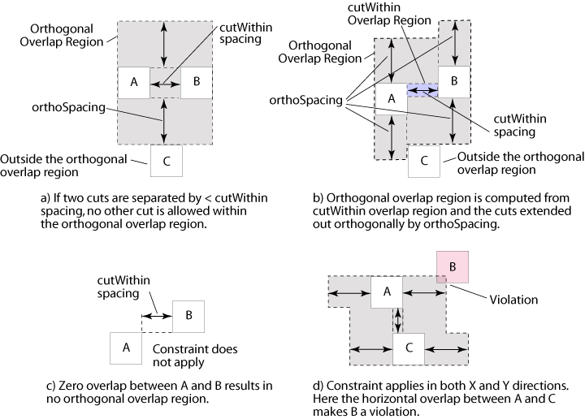

|
 |
 |
||||||
|
|
|
||||||
The built-in oacMinOrthogonalViaSpacing layer constraint defines a table that specifies the required orthogonal spacing (orthoSpacing) between overlapping via cut pairs and other vias in the cutWithin distance. The orthoSpacing value is the table contents or key for the table. The cutWithin value is the index into the table and represents the required spacing between a cut pair that are separated by this distance or less. The cut pair can be overlapping either vertically or horizontally.
This layer constraint can be scoped to a purpose as well. For information about how you create and use a constraint scoped to a purpose, see Scoping to Purpose in the Programmers Guide article Creating and Modeling Process Rules and Constraints.
| Value types: | oaInt1DTblValue |
| Database types: | oaDesign, oaTech |
| Object types: | oaAppObject |
oacMinOrthogonalViaSpacing constraints have an oaInt1DTblValue in which the lookup key is the spacing between the cut pair.
oacMinOrthogonalViaSpacing constraints can be created in the oaDesign and oaTech databases.
oacMinOrthogonalViaSpacing constraints can be added to constraint groups on oaAppObjects.

Some fabs use a method other than minimum adjacent via spacing to limit via density. A common approach is to use several different spacing values that are dependent on via cut pairs and their spacing to other via cuts in an orthogonal direction.
Return to Creating and Modeling Process Rules and Constraints
Return to Programmers Guide topics
Copyright © 2001-2010 Cadence Design Systems, Inc.
All rights reserved.